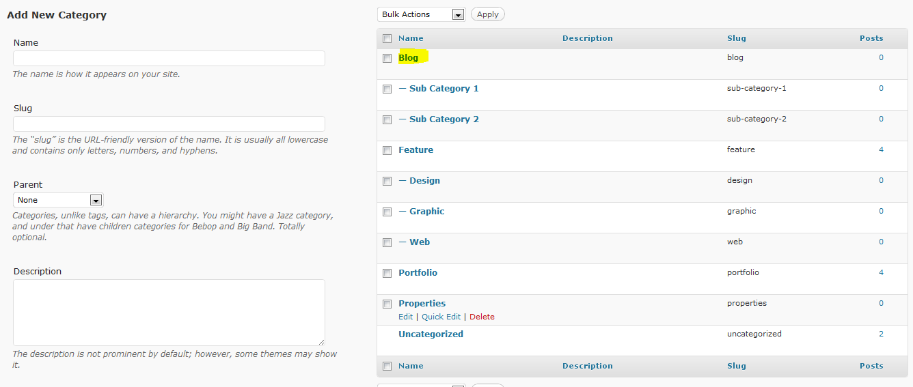
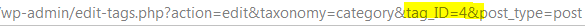

Configuration
Better Recent Posts Widget Pro includes 11 options that you may configure on a per-widget basis.
1. Widget Title
This is the title that is displayed above the post list. Enter whatever value you wish, or leave it blank for no title. For example, you could enter "My Latest Posts", or, if you are using it to display latest entries from a custom post types, perhaps something like "My Latest Books".
2. Display Post Title
This option will allow you to either show or disable the post title from being displayed. If this option is enabled, the post title will be linked with the permalink of the post.
3. Display Post Author
This option will cause the author name to be displayed beneath the post title. The author name will be placed on a new line, below the post title, and will be prefixed with "by" and followed by the publication date. So, if this option is enabled, it may look something like this:
The Title of My Latest Post
by Pippin Williamson - 2 days ago
4. Display Post Date
This option will allow you to turn on or off the post publication date.
5. Display Comment Count
Check this box to include the number of comments after the post title. The comment number will be displayed like this: This is the Post Title (x). X is the number of comments and it will be linked to the comments page.
6. Display Post Excerpt
This will allow you to turn on / off the post excerpt display. If this box is checked, an excerpt of the post content will be displayed.
7. Excerpt Length in Words
With this option, you can specify how long of an excerpt to display. The default length is 10. Enter an integer for the number of words you'd like displayed.
8. Choose the Order to Display Posts
With this option, you can choose the order that posts are displayed, in either ascending or descending order. This option goes hand-in-hand with the next option, which controls how posts are sorted. So let's say you're sorting your posts by date, then this open will control whether the newest or the oldest posts are displayed first.
9. Choose the Post Sorting Method
This option allows you to choose how the posts are sorted, alphabetically by title, by publication date, or randomly. If you choose to sort by date, then posts will be displayed in order, either newsest to oldest, or oldest to newest, depending on the option you have selected for #3. The "rand" option will cause the posts to be displayed in a random order.
10. Number to Show
This is the number of posts that will be displayed in the widget. By entering 5, only 5 posts will be displayed. You can enter any number here you wish.
11. Offset
The offset allows you to specify a number of posts to skip. By entering 2, the first post displayed would be the 3rd post in the database.
12. Display Thumbnails
Enabling this option will cause the Featured Post thumbnails to be displayed to the left of the post title. This option only works for those posts which have a thumbnail defined.
13. Size of the thumbnails
This is the size of the post thumbnails displayed in pixels. Thumbnails are always square. So, if you want to show 40px square thumbnails, you'd enter 40 here. Only enter the number, do not enter any kind of unit, such as px.
14. Choose Taxonomy to Display posts from
This will allow you to limit the posts displayed to those organized under a certain taxonomy, such as category, post tag, or any custom taxonomy. This option will also allow you to display only posts that have a certain format. Let's say that you have a custom taxonomy called "genres", and you would like to only show posts that have a specific "genre" set, then you would choose "genre" from the drop down, and then proceed to the next field to enter the IDs of the specific genres you would like to show.
15. Taxonomy Term IDs / Slugs
These are the IDs or slugs of the taxonomy terms (from the taxonomy chosen above) to display posts from.
Continuing from step 9, you have four different genres created inside of the genres taxonomy: classical, jazz, rock, and pop. You only wish to show the posts from the Rock and Pop genre. So what you do is obtain the ID number or slug name of each of these genres and enter them in this field, separated by a comma. They would looke something like this:
10,26
or: cat-slug-one, cat-slug-two
The easiest way to get the slug of a taxonomy is to go to that taxonomy page (the page that lists all of the items within that taxonomy), and look under the Slug column. That value there is what you will enter in the widget field.
The easiest way to get the ID number of a taxonomy is to go to that taxonomy page (the page that lists all of the items within that taxonomy), and click on the taxonomy you want.

Once you have clicked on the taxonomy item name, the ID will be part of the URL in the browser bar.

Displaying Posts Based on Format
1. Choose "post_format" under Taxonomy.
2. Enter "post-format-{format name}" in the ID/Slug field. Replace {format name} with the name of your format. So if you want to display posts that have the "image" format, you'd use "post-format-image".
3. You can display more than one format in the same way as multiple category IDs or slugs by separating them by a comma.
16. Choose the Post Type to Display
This option will allow you to specify a post type to display posts from. This could be the default posts, pages, links, or any custom post type. An important thing to remember with the custom post types, is that if you are limiting the posts displayed to specific taxonomies, then your taxonomy and your post type must be connected.
If you wish to show more than one post type, simply place multiple widgets, each with their own post type selected.